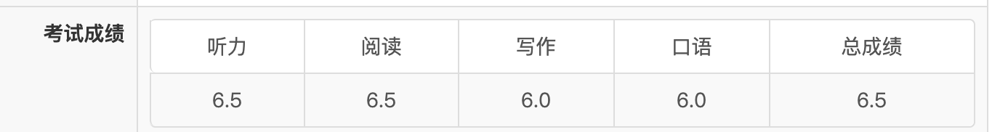
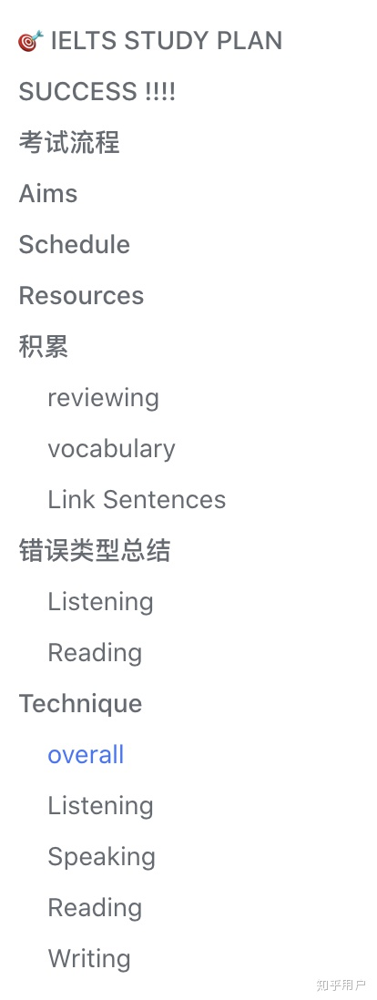

一个月搞定雅思！分享我的考试攻略
这篇文章写于2020年10月，最开始是希望在知乎上给大家分享一下我的雅思经历和备考方法，现在整理到博客上，也算是给自己的备考生涯留个纪念啦！以下是原文。
恕我直言，6.5分的目标就不要看机构老师卖课推广的文章啦～ 6.5的最低分是两个6.5，两个6.0，都是合格分，想要从更低的水平达到6.5老师帮不了你的，要靠自己！本文适合英语基础差（不偏科，啥都差），雅思需要短时间内（一个月）突击到6.5分（小分6.0）的同学关注。
最近刚刚实践一个月突击雅思6.5的全过程，按国际惯例，先放上成绩截图。

没错，刚好压线6.5！如果有更高追求的同学，本文经验就不适合你啦。如果跟我一样抱着“分不在高，够用就行”的目的来参加雅思，请相信本文能给你的复习效率带来飞跃提升。
- 应试第一步：确认目标和距离，制定备考计划。
所有的水平测试备考的第一步都是最重要的，那就是要确认你的目标水平和现有水平。这是制定整个备考计划的基础，有助你精确分配时间到每一科的提升上。制定计划的全过程，请找一个在线文档工具（推荐，好修改，不习惯屏幕用A4纸也行），写下你的计划和目标。后续复习中的所有方法步骤和资料都可以汇总到这个文档里，方便进行进度管理。
分享一下我的备考文档目录：

我的备考计划完整链接
1 | |
- 收集备考资料
网上的雅思资料可以说是非常非常多了，但如果希望一个月内完成整个复习流程，看完所有资料肯定不现实。对于突击水平考试来说，资料的性价比最重要，大家要追求用最短的时间最高效率地提分！分享一下我的备考资料：
单词：扇贝单词app （词表：王陆807雅思词汇（听力））
在线真题（免费，机考专用）https://ieltsonlinetests.com/ielts-exam-library
听力：在线真题 + 王陆听力语料库（网上下载pdf + 朗易思听app）
阅读：在线真题 + 剑桥11-15（诚实地说，买这么多本我只做了两篇test…）
写作：B站 + 知乎 + 顾家北写作
口语：学为贵app + 知乎
以上资料，除了剑桥真题，其他均为免费。甚至剑桥真题也可以免费，不过有条件还是建议大家支持正版哈～
以上资料就足够大家到6.5了，讲道理一个月也用不上更多的资料。各种机构的老师辅导呀都是更高分才需要的，对于6.5这种比较基础的分数要求，辅导老师的用处不大，并且沟通的时间还可能拖慢你的复习计划。
- 资料使用和复习方法（单词）
单词在一个月突击的时间里，推荐背诵《王陆807雅思词汇（听力）》词表。用哪个单词app都行，一个星期内每天花两个小时把词表背完即可。我用的扇贝app，功能都齐全。一个星期备考，目标只是6.5的话，就不要想什么“单词是一切基础”了=。= 好好学英语的事很重要，但不是你这一个月要操心的，雅思考试可是已经报名啦。
- 资料使用和复习方法（听力）
听力复习包含两部分，一个是做真题 + 精听真题。第二个是单词听写。按以下方法复习后，每天或者隔天做真题保障手感就可以了，合理安排各part时间。
- 做真题 + 精听真题
用雅思真题材料（笔试就用剑桥真题的书，机考就用ieltsonline那个真题网站），计时做题中间不做任何停顿，把section1-section4做完。然后使用五步精听法，挑至少一篇精听完，并在第二天早上复习一遍。（五步精听法是我看知乎上其他同学总结的，请大家自行搜索并一起给原文作者同学点个赞！）
- 单词听写
单词听写主要是培养大家听写的灵敏度。形成条件反射，听到音节先拼写再回忆单词意思。这个反射顺序很重要，听力考试时留给拼写的时间可能很短，先写出来最重要！
听写材料就是《王陆听力语料库》这本书，请先看序章了解这本书的使用方法。并按照书上的指南按优先级顺序使用，一个月大家能把3、4、5 、11章听写完就很了不起了，高效率的同学可以根据指南反复听写直到正确率95%，你的听力肯定就不止6.5了。个人建议不用到这么高的正确率，可以把时间花在其他part上。（作为参考：我只听了3、4章一遍，正确率大约60%，成绩6.5）
- 资料使用和复习方法（阅读）
阅读我相信是大部分国内同学的强项，我只用了一个众所周知、大名鼎鼎的方法：同义词替换法。具体方式请自行知乎搜索或者看《刘洪波阅读真经》这本书。大家学习同义词替换法后，不断做真题运用到日常的做题中，形成找同义词的做题反射，阅读6.5保底。
- 资料使用和复习方法（写作）
- 小作文
小作文强烈推荐知乎这篇文章.这个老师太实在了，总结得贼棒，还免费！没有上过这个老师的课，但这篇task1攻略真的很靠谱！学习加实践，只要三天就能掌握task 1 核心技巧。
建议大家在学习这篇总结的时候，自己再归纳总结一遍，能更好地消化。这篇文章里没有地图题和流程图的介绍，应该是需要付费上课获取的资料。但其实这两种类型的task1顾家北书里有介绍，大家也不用到处找其他资料了。
- 大作文
大作文很多同学都在背范文，其实根本没必要，6这个分数段根本不是靠背范文写上去的。词藻再华丽，没有逻辑或者跑题的作文就是5.5。相反，词汇和句子没有很复杂的变化（还是至少要有从句），但结构清晰逻辑扣题的作文，6.0很稳的。
写作拿到6分的关键就是逻辑和结构。只要行文有逻辑，语法错误不过分，单词拼写错误不过分，你就是6.0。写作我用的材料是：大名鼎鼎的《顾家北》这本书。这本书的一周速成使用方法给大家介绍一下。
这本书把大作文分成了五大类：论述类、观点类（单一观点）、观点类（多观点）、报告类和混合类。每章节介绍一种类型，并附上翻译练习 + 范文修改 + 类型总结。一个星期作文备考时间，你不需要做翻译练习和范文修改，请直接看每章的类型总结！总结里包含每种类型的识别方法（题目问句不同）、主体段分段方法、段内结构。每种技巧都有非常明确的指南和详细解释。掌握作文分类和写法就能保证不跑题有逻辑，6.0就有了。
建议大家在阅读这本书的时候自己写总结，能够更好地消化知识点。
分享我的作文备考总结
单看知识点可能很难跟实践结合，推荐一个B站小姐姐（up主：丸子tinateena）的高分写作教程，手把手教大家实践。B站上还有很多其他高质量的雅思up主，就不一一推荐啦，大家可以自行搜索，对照着顾家北的总结来学习。
- 资料使用和复习方法（口语）
口语推荐学为贵app。这个app可太好了，虽然大家都是卖课，但我用了这个app后，老师亲自加微信给我发口语复习资料….还是免费的。虽然我的目标是6.0，到不了需要给老师交钱上课的水平，但免费的口语题库还是太感人了！
口语复习到6.0只要达到能对话的水平就行，口音不重要，不至于到考官听不懂的程度就不用特意练习语音语调了。分享我的复习技巧：1. 练习几个万能拖延时间的句子来替代emmm（例如well you know…）。2. 对照题库把你的中文答题思路写出来，并翻译成英文句子（不用很复杂，能用宾语从句就够了），然后通过提取关键词来背诵。技巧在于你的回答应该是有逻辑的，这样背起来不吃力，句子结构可以自由发挥。
口语考试要到6.0最重要的还是心态。“我是交了2000+来享受口语老师的服务的”，这种心态就很不错。避免紧张造成的脑子空白，要把紧张换成兴奋的感觉，争取balabala瞎说一通也很自信～
- 备考心态（重要）
如果只是求一个最低分6.5的分数，备考心态千万不要很焦虑！大可不必啊朋友！战术上重视，战略上放轻松是最好的心态。我个人经验是，不必强迫自己每天学xx小时，甚至到学不够时间晚上焦虑到睡不着的程度。这样的状态，就算只复习一个月，心态也崩了，身体也不好了。
建议大家催眠自己相信，一个月求一个及格分是一件正常努力就可以做到的事！（大学里试过三天从零复习一门课60飘过的朋友们都明白我在说什么）。任何水平考试（而不是排名考试），都是设置了大部分人易过的及格线的，雅思也一样。只求6.5真的不需要焦虑好吗朋友们！
最后，写这么多不来个赞赏吗？😭
祝大家都能考出个好成绩！啾咪～
本博客所有文章除特别声明外，均采用 CC BY-SA 4.0 协议 ，转载请注明出处！